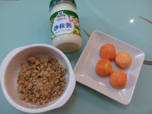
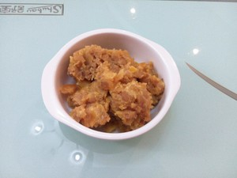
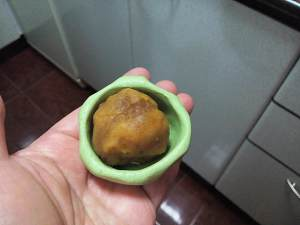
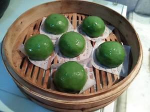
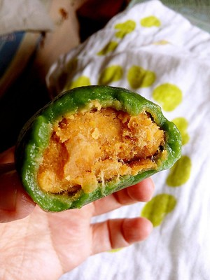

虽然相对于日版的深夜食堂，国内版的剧情对我的吸引力稍差，然而对剧中美食的兴趣却极为浓厚，一直想要把喜爱的几道都尝试一下，鱼松饭是我一下就相中的，尝试做了一下感觉味道真的还不错，尤其对于不太可以接受生三文鱼的小伙伴来说，这个是吃三文鱼一种不错的方式，所以忍不住写出来和大家一起分享~~期待大家的作品哦~~
用料
糯米粉，250克粘米粉，25克
澄面，25克
色拉油，少许
麦青汁， 80-100毫升
咸蛋黄， 若干粒（根据口味）
猪肉松， 100-150克
色拉酱， 1-2汤匙
温水， 少量
步骤
1,先准备馅芯的材料:咸蛋黄、肉松、色拉酱

2,咸蛋黄隔水蒸熟，压成颗粒状粗泥粒，加入色拉酱，增加复合口味，以便馅芯容易成团。

3, 三种材料拌匀成团，口味根据自己的需求，可以咸蛋黄多些，也可以肉松多些。

4, 制作青团可以用艾草或麦青，左面是新鲜艾草焯水后打成泥，冰箱速冻可以存上一年，随取随用。右面是网购的麦青汁，咸口青团建议选用麦青汁。艾草有中药味，带有苦涩，和面时加点白糖，改善口感；麦青有青草香味。

5, 三种粉按比例混合倒入盆中，加入麦青汁、少许色拉油、温水和成团。

6,面团和到光滑，呈苹果绿色。颜色不宜过深，面团蒸制时会变深。

7,取一面团打窝，包入一团馅芯。

8,搓成汤圆一样，垫油纸码入笼屉。开锅中火蒸15分钟。

9,出锅后立马刷一层色拉油增加光泽，以防表皮发硬。

10,外皮软糯Q弹，内馅油亮温润，满口溢香。
